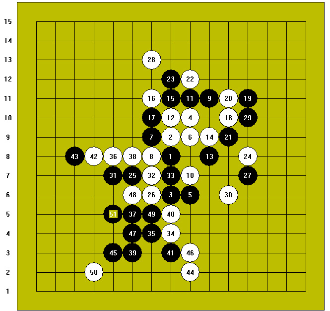

联众棋趣征文之——《方寸大千》
#1 <font color="red">联众棋趣征文之——《方寸大千》</font>作者：以和为贵 发表时间：2011-8-29 11:33:47
[前序]：话说联众江湖，波澜壮阔，柳暗花明之处，常有桃源。或三五成群、或相对促膝，以手谈度日、以棋趣为生，个中滋味，一言何足道也。
[正文]：这本来是一个平常的日子，他就象以前一样，在忙完工作之后，打开电脑登录联众，进入了他熟悉的五子中级棋室，选个不起眼的位置坐了下来。
他轻轻地舒了一口气，以前总是坐上半天也不见有人来，他有些分神地遐想：这次会不会来一个美女呢……突然他发现对面已经有人举起手来，连忙将鼠标移到了“开始”位置，击了下去，同时瞄了一眼对家的资料，意外地吃了一惊，胜率86%、分数3265，竟然是个高手！
他有些忐忑不安地进入了棋室，毕竟他的棋艺一直在1D到2D之间徘徊，与这么高水平的玩家对弈，对他来说还是第一次。他稳了稳心神，选择“开始”棋局。
对家开局，他直指防守，对家跳二，他紧张的心情略为放松了一些，他以前学过，这是瑞星局，五手I6，他终于平静下来，这是两打点中的平衡点，如果按大定式的走法，虽说白棋胜机不大，但也不至于速败，纵使不敌，也不会输得太过难堪。
双方落子如飞，看来对定式的走法都相当熟悉，黑11手！他仔细地分析着这个点，印象中这一手是应在I8的位置，估计对家也不想走大定式吧，所以才临局变招。从棋形来看，这一手占尽外势，也不失为以逸待劳的好棋。他拼命地回忆着棋友教过的棋理：“开局争二”、“团角易攻”，他抿了抿嘴，将白12手应在H10。
他这时才发现，已经有棋友进棋室来旁观了，便一一打过招呼，猛然耳边“咳咳”声响起，定睛望去，黑13手已经占住J8的位置，他不由得在心中暗暗感叹，开局争二、中局抢三，说起来容易做起来难哪。
白棋或攻或守，蜿蜒爬行几手，黑棋并没有给他发展的空间，无奈之下白18手强行打入K10，意图在右上有所作为，黑棋干净利落地断绝了这种可能。白回防I12，黑23手H12抢跳三！他由衷地佩服，对家攻守有度，进退自如，确实有大家风范，正是他长久来梦寐以求的境界。
黑子白子在弹丸之地狭促相争，先后易位，左突右冲，各自抢占有利棋形，不知不觉间已行至31手，他看了看大局，白棋虽然落在下风，但也没让黑棋形成太大的优势，终于松了一口气。
他突然听到一句问候，原来是多日不见的老棋友也来看热闹，他忍不住上前握了握手，寒喧数句，同时发现进入棋室旁观的人更多了，不经意中房间变得拥挤起来。
白32手做眠三防活二，黑33手做眠三防冲四，平分秋色；白34手压打，黑35手还以压打，旗鼓相当；白36手向上求发展，黑37手向下争地盘，各竞心机；白38手以守为攻，黑39手风云突变！
他知道他的计算广度出了问题，35手与5手之间的跳二被他忽略了，他的心中暗暗叫苦，只能强防了。41手活三！他匆匆算了下，防上防下都有杀棋，索性心一横冲出D8做长连禁手，同时计算着黑G3活三后白防E3，还能勉强支撑。他心中思忖道：也许没有足够的空间了吧。
黑45手E3！这手跳三彻底打乱了他的阵脚，他有些失神地嘀咕：这本来是我想占领的根据地啊。好友在旁提醒他：“败势要冷静，集思妙手生！”，他对好友笑了笑，重新穷尽三个防点，无奈之下白46手防在I3，只能寄希望于G5的反四了。
黑棋如长虹贯日，以两个绝对先手，化解了白棋的守势，51手E5双杀！他看了又看，心知大势去矣，握手签城下之盟。
附棋谱：

[后记]观战ID有“清水芙蓉”，棋中雅者，即兴口占：点点黑白摆擂台，未曾谋面试雄才，一子赢得乾坤定，马失前蹄不笑呆。我闻言呵呵一笑，礼尚往来，即兴凑趣：点点黑白摆战场，未曾谋面试篇章，一子赢得江山定，马失前蹄不笑狂。
这正是：
纹枰论道兴致高，
棋逢对手逞英豪，
方寸大千多变幻，
棋趣无穷乐涛涛。
——2007年冬于联众论坛。
［ 屏蔽 于 2011-8-30 5:41:03 时花20金币送鲜花一朵］
［ 屏蔽 于 2011-8-30 5:41:27 时奖励此帖[金币加 100 威望加1］
［ 蓝天蓝 于 2011-9-3 0:25:09 时花20金币送鲜花一朵］
［ 微微一笑 于 2011-9-3 9:16:33 时花20金币送鲜花一朵］
［ 也也 于 2011-9-3 20:58:48 时花20金币送鲜花一朵］
［此帖子已被 屏蔽 在 2011-9-13 23:49:44 编辑过］
#2 Re:联众棋趣征文之——《方寸大千》作者：离子阵阵雨 发表时间：2011-8-29 13:30:43
沙发，我想问下怎么发图。。。［ 以和为贵 于 2011-9-1 12:35:12 时花20金币送鲜花一朵］
［ 以和为贵 于 2011-9-1 12:35:19 时花20金币送鲜花一朵］
#3 Re:联众棋趣征文之——《方寸大千》作者：寒风囚月 发表时间：2011-8-30 9:53:38
板凳
［ 以和为贵 于 2011-9-1 12:35:50 时花20金币送鲜花一朵］
#4 Re:联众棋趣征文之——《方寸大千》作者：以和为贵 发表时间：2011-9-1 12:34:59
回二楼：
如要发图分成以下两种情况：
一、网上的图片：首先复制网上图片的地址（右键点击图片查看“属性”），然后点击发帖窗口上的 按钮，粘帖进图片地址即可。
按钮，粘帖进图片地址即可。
二、上传电脑中的图片：点击发帖窗口下方的“浏览”按钮，选择电脑中的图片，然后点击“上传”即可。图片的大小不能超过500KB。
回三楼：多谢顶贴，听说最近论坛可能要对灌水回复有所处理，还望注意为好。
#5 Re:联众棋趣征文之——《方寸大千》作者：蓝天蓝 发表时间：2011-9-3 0:25:37
看你的文章总是与众不同［ 以和为贵 于 2011-9-3 10:01:45 时花20金币送鲜花一朵］
［ 以和为贵 于 2011-9-3 10:01:55 时花20金币送鲜花一朵］
［ 以和为贵 于 2011-9-3 10:02:02 时花20金币送鲜花一朵］
#6 Re:联众棋趣征文之——《方寸大千》作者：微微一笑 发表时间：2011-9-3 9:16:26
这明明是故事嘛故事嘛故事嘛~小玉同学你懂的哈［ 以和为贵 于 2011-9-3 10:02:11 时花20金币送鲜花一朵］
［ 以和为贵 于 2011-9-3 10:02:17 时花20金币送鲜花一朵］
［ 以和为贵 于 2011-9-3 10:02:25 时花20金币送鲜花一朵］
#7 Re:联众棋趣征文之——《方寸大千》作者：以和为贵 发表时间：2011-9-3 10:05:28
回五楼：万变不离其宗。
回六楼：故事里的事，不是也是，是也不是。
#8 Re:联众棋趣征文之——《方寸大千》作者：吉小鼠 发表时间：2012-6-21 11:35:01
真是美贴［ 以和为贵同学于 2014-9-25 19:32:54 时花20金币送鲜花一朵］